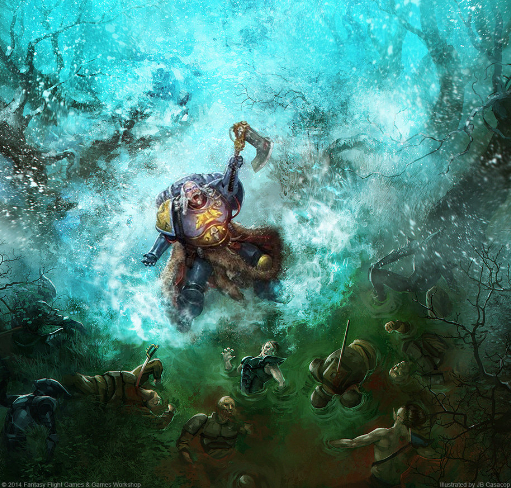

History
The role of the Rune Priest harkens back to the bygone era of the Great Crusade in the last two centuries of the 30th Millennium. They were one of several subdivisions within the Priests of Fenris, the interconnected orders which provided for the physical, spiritual and technological needs of the VI Legion. Occluded to outsiders beneath webs of what outwardly seemed superstition and barbarism, they were more than technicians and specialists, but instead the repositories of the Legion's true history, the keepers of its secrets and the masters of its lore. There were several divisions of particular prominence, with the warrior-mystics known as the Caster of Runes being one of them. They were undeniably an order of psykers who considered themselves a breed apart from the Librarians of the other Legions. Those chosen as the Casters of Runes had the psyker's gifts, but treated them warily as a potential curse as well as a blessing, reaching for their power only through a deliberate skein of cognitive shielding within their own minds, and aided by a unique lattice of psycho-memetic pattern field technology incorporated into their armour as a safeguard both against hostile outside forces and drawing down too much power from the Empyrean themselves. They manipulated their powers through these little-understood runic matrices and adapted Fenrisian rituals, and provided the VI Legion with prognostication and shielded it from Warp threats. Eventually this bygone specialty rank of the Space Marine Legions evolved into the present-day role of the Rune Priest for the Space Wolves Chapter.
Role
Of all the priesthoods of the Space Wolves, the Rune Priests are the most arcane, for these individuals are distant and mysterious figures. Learned in Fenrisian shamanic traditions that a mere tribesman could never comprehend, the men who become Rune Priests are often marked by the gods even before their induction into the Space Wolves. Consuming their days and haunting their nights, these shamans possess the knowledge of the mystic arts, of hidden rites handed down through the millennia. Keeping their own counsel, Rune Priests live apart from their kin save to interpret the casting of the runes. During battle, however, the Rune Priests are roaring, raging incarnations of storm-borne fury. The elements themselves obey their command, for Rune Priests are masters of the storm. They can call upon the power of a mighty blizzard to drive shards of ice into the flesh of their enemies, implore the element of lightning to spear their enemies from above, or compel the rocky jaws of Fenris herself to open, sending the enemy tumbling downward into the planet's molten heart. None truly understand how the particular psychic ability that allows control over the elements becomes manifest within the human soul. Electricity might crackle from a brawling warrior's fists, or maybe a young Blood Claw will inexplicably survive a massive lightning strike and be forever touched with the power of the storm. Some believe that perhaps a latent psychic ability resides within all the bloodlines of Fenris, or that there is some sort of irregularity in the Canis Helix genetic catalyst that triggers such a change. To the warriors of The Fang it matters not, for they care only for the Rune Priests' ability to serve the Chapter with honour -- how this is achieved is their own business. Amongst the tribes, it is believed that all Fenrisian men are sons of the storm, and that there is nothing unnatural about the tempest lending strength to its own. In battle, Rune Priests carry graven weapons covered from end to end in ancient runes that glow red-hot when psychic power is channelled through them. With these runes the Rune Priests control and direct the fury of the elements. Rune Priests also carrying talismans, totems and fetishes that often prove to be potent weapons against the eldritch powers of the Warp. The tribal shamans of Fenris carve runes upon the teeth of totem animals such as the sea beasts known as Ice Krakens. The most powerful of all are carved upon the fangs of the Wolves of Fenris. These teeth are used to divine the fate of men, and to determine the course of future events. With these tools of their trade the most hazardous duty of the Rune Priests is to banish the most terrifying of daemons, whose hide is proof against the steel of lesser men. The Rune Priests can do this and more without hesitation or complaint. Such is their legend that many Space Wolves believe to fight alongside a Rune Priest is to witness the ancient sagas come to life. Some Rune Priests also have psybernetically-enhanced familiars that accompany them to war. Usually taking the form of a raven, these familiars are fitted with augmetic relays that give their master a psychic view of large swathes of the battlefield.
Rune Priest Psychic Powers
Rune Priests possess a number of unique abilities that standard Chapter Librarians do not. These powers are psychic as well as elemental in nature and work on a gestalt principle similar to those manifested by Ork Weirdboyz, in which the more Rune Priests are present in one location, the more powerful their psychic abilities become. Unlike the Librarians of other Chapters, Rune Priests' psychic abilities are based upon the shamanistic rune magic used by the feral natives of Fenris. The Rune Priests use runes to concentrate and develop their powers, and their armour is enscribed with patterns of interwoven runes that form a complex psychic web attuned to the Rune Priest's own mind. • Fury of the Wolf Spirits - The Rune Priest summons up the spirits of the Thunderwolves Freki the Fierce and Geri the Cunning from the netherworld. These Thunderwolves were Primarch Leman Russ's wolf-brothers and constant companions. The Rune Priest sets the charcoal-black spirits of the two most exalted Thunderwolves upon the foe, their eerie howls sending men mad with fear. As long as this power is sustained, the Rune Priest is flanked by two spectral wolves that he may direct against his foes with a verbal command. • Jaws of the World Wolf - The Rune Priest implores the spirit of the world upon which he walks to open its rock-fanged maw, and a chasm cracks open under the feet of his enemies, sending them tumbling to their deaths. • Living Lightning - The Rune Priest cries out to the sky and calls a dancing bolt of sentient electricity down from the heavens. This bolt crackles from the brooding skies, arcing into the ranks of the enemy and grounding on foe after foe until a trail of blackened corpses is left in its wake. • Murderous Hurricane - The Rune Priest bellows an ancient curse and his frosted breath coalesces and grows into a deadly blizzard. Within moments, the Rune Priest's foes are all but consumed in a hurricane of freezing shards, a thousand blades of Warp-forged ice plunging into their flesh. • Storm Caller - The Rune Priest chants an ancient rite that builds into a terrifying crescendo. In the space of a few moments, howling winds and furious blizzards rage about him in a vortex of ice and snow that crackles blue with destructive psychic energy. • Tempest's Wrath - In a fearsome display of power, the Rune Priest calls upon the spirits of wind, storm, and snow, tearing the air with gales and tempests. The Rune Priest brings the rage of the storm to a roaring climax as frost-fingered wind spirits whip those who intrude upon their domain out of the skies and smash them upon the stony ground. • Thunderclap - The Rune Priest slams his armoured gauntlets together whilst shouting a word of power, and the noise is magnified a hundredfold. The resultant thunderclap is loud enough to shatter stone and even liquefy the brains of those nearby.
Wargear

• Runic Power Armour - Runic Priests wear Runic Armour denoting their specialist position within the Chapter. This armour is covered in glowing, protective Fenrisian Runes of Power that nullify the affects of enemy psychic abilities. The Space Wolves are known to also grant valiant members of their Chapter these specially crafted suits of Power Armour inscribed with psychic Runes of Protection by the Chapter's Rune Priests. These runes provide the wearer of Runic Armour with an enhanced defence against psychic attacks. This armour is created by the Space Wolves Chapter's Iron Priests (Techmarines) and officially codified by the Adeptus Mechanicus as the Mark XII Lupio Pattern, though the suits can look like any of the standard patterns of Power Armour. As a result of their antiquity, many of these suits are often earlier patterns of Power Armour than the most common Mark VI and Mark VII. • Terminator Armour (Optional) • Psychic Hood - Psychic hoods are commonly used by Astartes Librarians. These arcane devices are lined with psi-enhancing crystals that amplify the wearer’s psychic powers. More importantly, they render the wearer capable of nullifying the effects that other psykers can unleash. • Chooser of the Slain - The Chooser of the Slain is a fusion of flesh and steel that acts as a cybernetic familiar and spy for the Rune Priests, often taking the form of a psyber-raven though other animal forms are also possible. • Runic Weapon - Runic weapons are the signature tools of the Rune Priests, often taking the form of staffs or wickedly bladed axes. These staffs are crafted from rare and priceless oak, the wood taken from trees raised in the soil of ancient Terra back in the days when trees still grew wild upon that ancient world. Carved with protective sigils and canticles of banishment, the weapon affords excellent protection against the powers of the Warp. These staffs are highly prized treasures which gradually absorb the psychic imprint of their owner, becoming more closely tailored to the Rune Priest's mind. It is said that if a Rune Priest lives to a great age, his staff becomes a living part of him, and that after his death the staff lives on, preserving something of its former master's thoughts and powers.
Notable Wolf Priests
• Njal Stormcaller - Njal Stormcaller, called the Tempest that Walks, is the Space Wolves Chapter's greatest Rune Priest. He has proven to be of unparalleled ability both as an Astartes warrior and a psyker. He is accompanied by his companion Nightwing, a psyber-raven. • Irnist the Wise - A Rune Priest of the Chapter, Irnist the Wise is the twin brother to Erik Morkai and advisor to the Great Wolf Logan Grimnar. • Torvald - Known as Torvald the Reaver of Red Kraken Hold, he has continuously served in the Space Wolves' 13th Company for ten millennia. This mighty Son of Russ was one of the Space Wolves' first Rune Priests and fought by the side of Russ himself during the Great Crusade. He has been Wolf Lord Bulveye's lieutenant since that bygone era. • Ohthere Wyrdmake - Rune Priest of the Space Wolves during the Great Crusade and the Horus Heresy eras. Ohthere had befriended Ahriman, the Chief Librarian and Captain of the 1st Fellowship of the Thousand Sons Legion, in an attempt to learn about the sorcerous tenets of the XV Legion. He used what he learned to speak against the Thousand Sons for their blatant use of sorcery, leading to a ban on all Astartes Librarians during the Council of Nikaea. During the Fall of Prospero, Ohthere had a psyber-raven with him that Thousand Sons Astartes Ankhu Anen (Guardian of the Great Library of Prospero and member of the Corvidae Cult) thought was a good omen but unfortunately led to the destruction of his cult's library, eradicating thousands of years of history and research. Wyrdmake was ultimately killed by Ahriman after he realised that the Space Wolves had been manipulated by Chaos to attack the Thousand Sons.